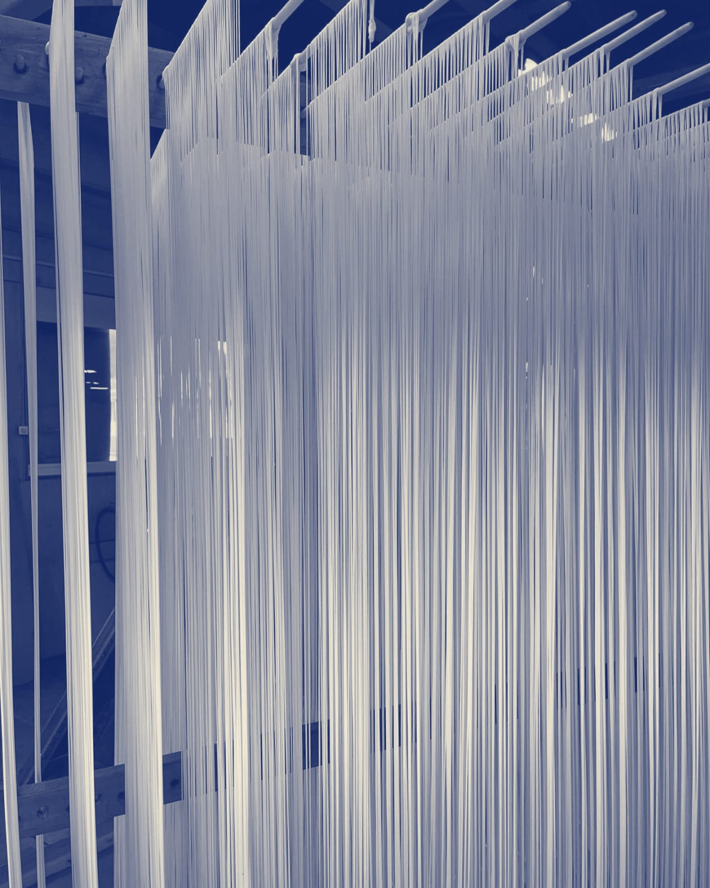

만드는 과정
볕가락제면소의 국수는 반죽에서 출하까지 76시간이 걸립니다.
76시간
소면 기준. 막대 길이는 걸리는 시간에 비례한다.
-
0시간째
1반죽
반죽실 · 20분
가루에 소금물을 부어 반죽기로 20분 섞는다. 소금물은 전날 녹여 15 °C로 맞춰 둔다.
-
0.5시간째
2숙성
숙성실 15 °C · 12시간
반죽을 비닐로 덮어 열두 시간 둔다. 이 사이에 가루가 물을 고르게 먹어 면이 덜 끊어진다.
-
12.5시간째
3압연·절출
제면실 · 롤러 6단
롤러 여섯 단을 지나며 반죽 판이 12 mm에서 면 두께까지 얇아진다. 끝의 절출 칼이 굵기대로 자른다.
-
14시간째
4걸기
제면실 · 1.5 m
자른 면을 길이 1.5 m로 끊어 대나무 막대에 반으로 걸친다. 막대 하나에 약 1.1 kg이 걸린다.
바깥 건조장 막대에 면을 거는 손 · 분위기 참고 사진 -
14.5시간째
5건조
바깥 건조장 · 건조실 · 48시간
해가 있는 낮에는 바깥 건조장에서 바닷바람에 말린다. 밤과 비 오는 날에는 건조실로 옮긴다. 수분이 13.5 % 아래로 내려가야 끝난다.

건조실에 걸린 국수 · 분위기 참고 사진 -
62.5시간째
6절단
포장실 · 25 cm
마른 면을 막대에서 내려 25 cm로 자른다. 막대에 걸쳤던 휜 부분은 따로 모아 잔면으로 판다.
-
63.5시간째
7계량·포장
포장실 · 900 g
100 g씩 묶어 종이띠를 두른다. 아홉 묶음을 한 봉에 넣어 900 g으로 맞춘다.
-
66시간째
8출하 대기
창고 · 10시간
봉지 안팎 습도가 같아지도록 열 시간 재운다. 수분을 다시 재고 출하한다.